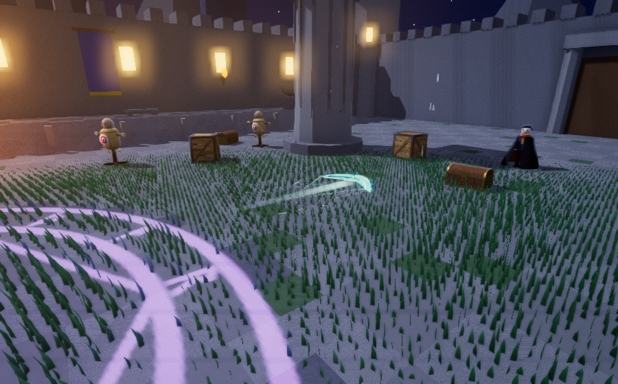
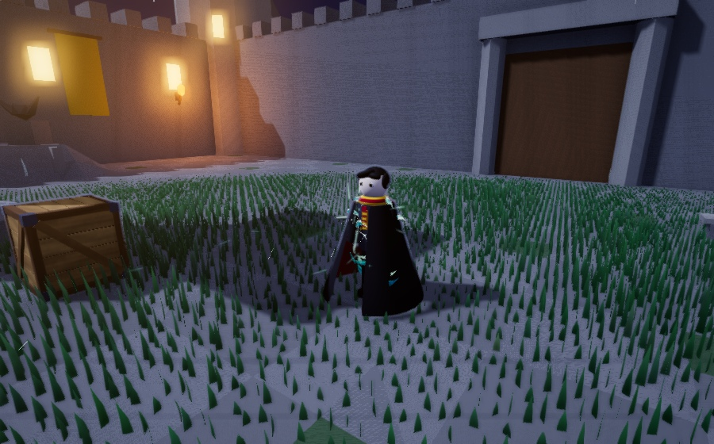

Wind BA · ใบเล็กลง 25% + หางลมละเอียด
หางหลักสองริ้ว + เส้นลมแตกกิ่งหลายความยาว + สะเก็ดโค้งและละอองเล็ก → คมลมปะทะแล้วสลาย
1 · ระหว่างพุ่ง — หางไหลตามหลัง

2 · ชนเป้า — แสงปะทะและคมลม

3 · เสี้ยวลมกับสะเก็ดกระจายผ่านเป้า

4 · เศษลมค่อย ๆ จาง